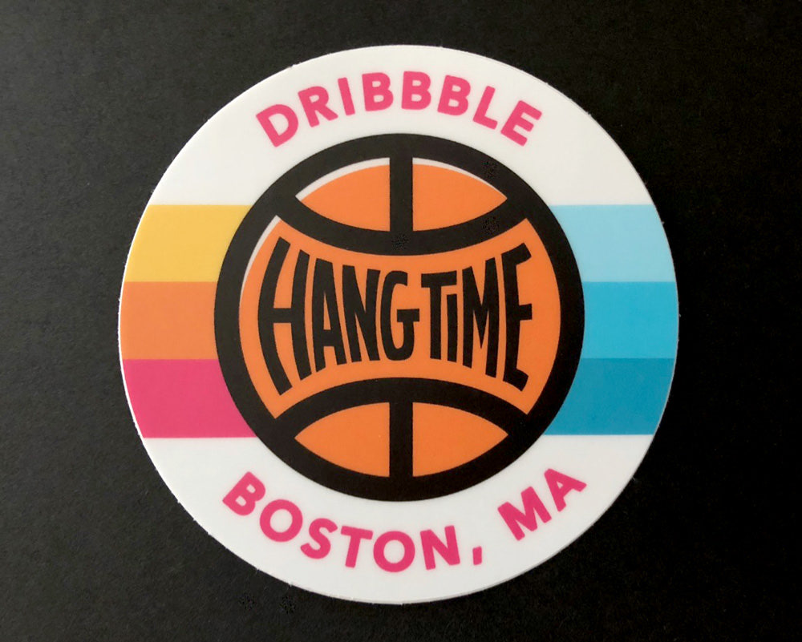

by Amy Parker and Dan Perrera

On October 4, Dribbble held its first ever conference — appropriately called Hang Time — in Boston. Attendees got treated to some inspiring talks from Debbie Millman, Kelli Anderson, Dan Mall, and Jon Contino, and Amy spoke on a panel about unlocking creativity.
Instead of a blow-by-blow recap, we thought we’d capture some of the emergent themes we took away from the event because, although we’ve probably all heard these before, we can all stand to be encouraged by them again.
Expect anything worthwhile to take a long time.
— Debbie Millman
Putting work out in the world can be scary but building a practice of creating is key. Experimentation, learning, and persistence are important habits to support. No one is successful out of the gate but you have to start putting ideas out into the world in order to start the learning process.
“Busy” is a decision. We don’t find time – we make it.
— Debbie Millman
Design is about solving problems and, for us as a community, that means having more agency in the decision-making process. Sometimes that means stepping into a larger role when collaborating with others and sometimes it means bringing your own ideas to fruition. Designers have the ability to make a large impact but it’s on each of us to make the time and take responsibility for our creative endeavors.
Conversely, if something feels like a drag and you just don’t feel like you can make time for it, it’s probably because, in your heart of hearts, you’re not really that excited about it — and that’s okay. Find something that does excite you (like dreaming up a progressive utopia) and pursue that.
A number of speakers touched on this topic over the course of the day. No designer is an island and we wouldn’t even be designers if we weren’t working with others to solve problems. Whether you work as part of a larger team or work directly with clients, it’s important to get other voices involved in the process to nail the right solution.
If you’re waiting for creative inspiration to strike while you’re sitting at your computer, you’ll be waiting for a long time. Get out from behind your desk and go for a walk, hit the gym, visit a museum, or walk around a neighborhood to get a fresh perspective on things.
Being unique is a forgotten trait.
— Jon Contino
So many of us are pushed into lives that are designed for us but technology has really given us the ability to work on our own terms. Incredible work is emerging from creatives who don’t conform to the factory schedule, instead working whenever they’re inspired.
Part of being a designer is looking at the world differently and it’s gratifying to see society start to understand the value in making time and space for interesting work to happen. There’s no “right way” to design — we all can cultivate our own process.
Dan Mall gave a really great talk on incorporating more (and more diverse) people into the design industry, using his own apprenticeship model as an example. This tied nicely into the sense of community the overall Hang Time experience created, bringing designers of all different disciplines and niches together — something we don’t often get a chance to do in our area. We left feeling excited and inspired and we’d love to see more programming like this in the very near future.